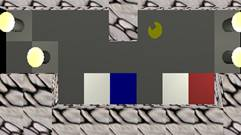
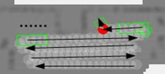
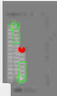
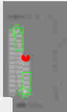
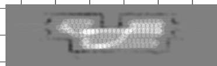

Beschreibung des
Verhaltens: behaviour_drive_area
>> Verhalten zum
flächendeckenden Fahren und Explorieren (Start mit FB Taste 8) <<
Exploration von Beispiel-Labyrinthen
Voraussetzungen: aktive Map (mit on_the_fly Aktualisierung) und Positionsstack
Das Verhalten ermöglicht dem Bot, ohne Kenntnis der Umwelt , eine flächendeckende Fahrweise. Er fährt hierbei solange geradeaus, bis er auf ein Hindernis trifft. Vorzugsweise dreht er sich dann nach rechts, um die rechte Nebenbahn abzufahren und merkt sich hierbei den noch unbefahrenen linken Weg auf dem Positionsstack. Während der Geradeausfahrt überwachen zwei Obserververhalten die beiden Nebenspuren und bei einem dort erkannten Hindernis laut Map wird die Strecke bis zum Hindernis auf dem Stack vermerkt. Kommt der bot an einer Wand an und die Nebenbahnen sind entweder schon befahren oder wegen Hindernis nicht befahrbar, so nimmt er vom Stack die nächste abzufahrende Bahn und fährt zum Anfangspunkt dieser Bahn.
Die folgenden Bilder sollen das Verhalten verdeutlichen. Die gestrichelte Linie wurde vom Obserververhalten wegen Hinderniserkennung auf den Stack gelegt und für spätere Exploration vorgesehen:
 
Das
Verhalten kann vereinfacht durch folgenden Algorithmus beschrieben werden:
a) Geradeausfahren und benachbarte Bahnen beobachten, bis ein Hindernis im
Weg ist
b) Wenn Weiterfahrt in verschiedene Richtungen möglich ist, dann
- lege zuerst die linke alternative Richtung auf den Stack
(Anfangs- und Endpunkt)
- Speichern des rechten Weges auf den Stack; wegen letztem
Stackeintrag wird rechter Weg hierdurch zur Vorzugsrichtung
c) Wenn Weiterfahrt nur in eine
Richtung möglich ist
- Speichern des noch nicht befahrenen Weges
auf den Stack
d)
wenn keine Weiterfahrt mehr möglich ist -> zu e)
e) holen nächsten Eintrag vom Stack
-
wenn kein Stackeintrag mehr vorhanden
ist -> zu g)
- fahre
zum Startpunkt der vom Stack geholten Strecke
f) Ausrichten auf den Endpunkt der zu
befahrenen Strecke und weiter mit a)
g) Verhaltensende – die komplette Fläche
ist abgefahren
Geradeausfahren:
Wenn bereits
Hindernis voraus gesehen wird, dann nur bis dorthin fahren via bot_goto_dist
sonst fahren mittels bot_goto_obstacle
Überwachung des Fahrens auf Hindernis und Abgrund erfolgt
via bot_cancel_behaviour
Während der Vorwärtsfahrt sind die Observer-Unterverhalten
(bot_observe_right_behaviour und bot_observe_left_behaviour) aktiv, die
jeweils die rechte und linke Nebenbahn auf Hindernis oder schon Befahren
überwachen. Wird ein Hindernis auf einer
Nebenbahn laut Map erkannt, wird die Strecke bis dorthin auf dem Stack für
spätere Exploration vermerkt.
Anfahren der nächsten Strecke:
An einem Hindernis angekommen, wird die
nächste Strecke vom Stack geholt und sich zum Startpunkt, der zum bot am
Nahesten ist, mittels bot_turn_behaviour
ausgerichtet. Via bot_goto_dist wird
nun dorthin gefahren und dies wiederum
überwacht (Abgrunderkennung) mittels bot_cancel_behaviour. Am Startpunkt der anzufahrenden Strecke
angekommen, wird sich nun zum Endpunkt der Strecke mittels bot_turn ausgerichtet und es geht wieder mit Geradeausfahren weiter.
4.
Exploration von Beispiel-Labyrinthen
Testparcours2:
Der Bot fährt zuerst hoch bis zur Lampe, merkt sich die linke Bahn im Stack für später, dreht sich nun zur rechten Spur, um diese wieder nach unten abzufahren. Hat er so die ganze Fläche bis zur rechten Wand befahren, fährt er nun zur linken Bahn, welche zu Beginn an der Lampe ankommend auf den Stack gelegt wurde.
Die folgenden Bilder zeigen diese Exploration:


Das vollständige Abfahren der gesamten Fläche von Testlabyrinths zeigen die folgenden Bilder:

 



- Pfadplanung auf nur befahrenem Gebiet
Wenn es nach Abfahren einer Strecke keinen unbefahrenen Weg mehr daneben gibt, so wird sich ja die nächste unbefahrene Strecke vom Stack geholt. Bei komplexen Labyrinthen kann der direkte Weg dorthin aber mit Hindernissen verstellt sein. Hier wäre eine Pfadplanung wünschenswert, die den bot auf nur bereits exploriertem Gebiet den Weg dorthin weist, um unbefahrenes Gebiet nicht zu zerstückeln. Es werden ja nur unbefahrene Strecken auf den Steck vermerkt.
- echter Trackfolger, der sich an Nebenbahn laut Map immer wieder in entsprechendem Abstand ausrichtet
Aktuell wird
nur der Startpunkt einer zu
explorierenden Bahn angefahren, sich zum Endpunkt ausgerichtet und einfach
geradeaus gefahren. Im Sim ist dies recht optimal und die Bahnen verlaufen
parallel zueinander. Der echte bot wird aber nie genau geradeausfahren können,
so dass die Bahnen auch nie gerade verlaufen. Wenn dann die Nebenbahn befahren
wird, müßte immer wieder der Abstand zur vorher befahrenen
Nebenbahn gecheckt und korriegiert werden. Nur so
wäre das Geradeausfahren ein echter Trackfolger.
- bei keiner
Wegefreiheit beim Vorwärtsfahren laut Map Strecke
nicht gleich verwerfen sondern vorn in den Stack
wieder einschieben mit Zähler, wie oft schon verworfen wurde und erst nach
x-Versuchen verwerfen
Eine Strecke
sollte möglichst nicht verworfen werden, weil sich möglicherweise nur durch das
Befahren dieser Strecke ein komplettes weiteres Gebiet eröffnet, welches sonst
unerforscht bleibt (Türdurchfahrt). Hier kann nach dem Stackholen
und Anfahren einer nicht direkt erreichbaren Strecke die Pfadplanung helfen.
Aber gerade bei einer noch nicht vollständig kartierten Umgebung kann eine
befahrene Strecke plötzlich mit Hindernis versehen sein und hier sollte dann
eine mögliche Reststrecke sich auch wieder gemerkt werden.
- Wandfolger zum Anfahren des Startpunktes der nächsten Strecke, da sonst immer kleine Gebiete an der Wand unerforscht stehenbleiben (Treppenabsätze)